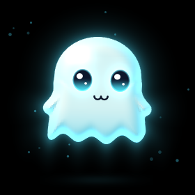
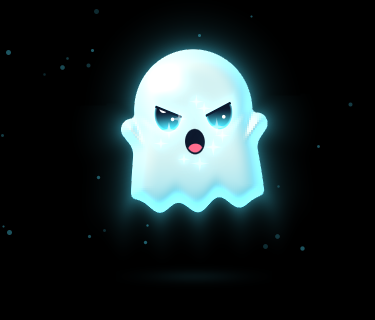
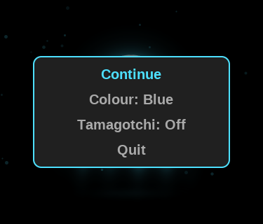
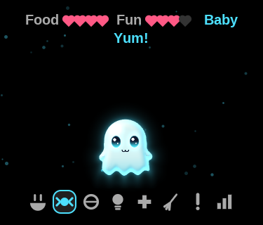
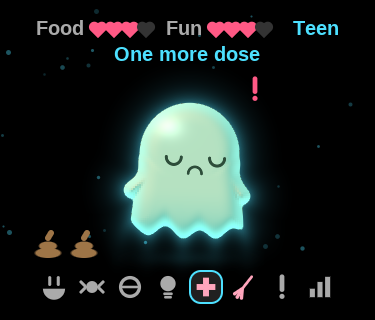
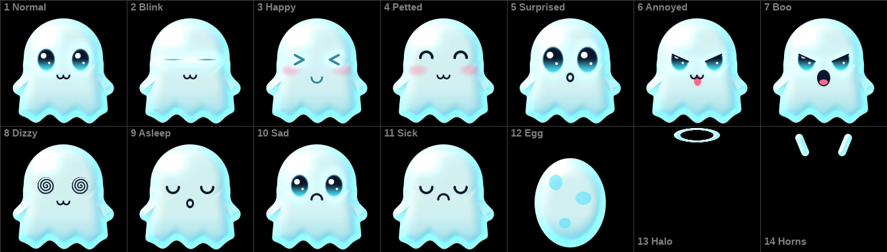
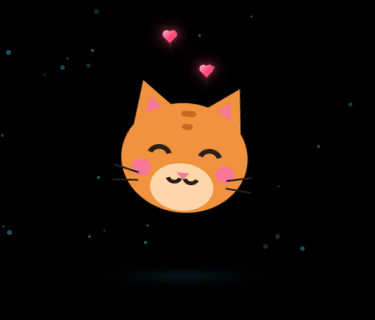
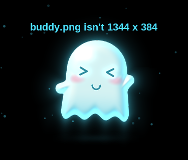

Install Buddy and say hello.
Library → Games → Buddy is a ghost to poke, pet and fling around the screen. Turn on Tamagotchi and you raise it from an egg instead, or paint your own and Buddy shows that in place of the ghost (Chapter 3). It isn’t in the firmware: it runs from the microSD card.
You need Q2 Pod 1.6.3 or later. The easy way is over Wi-Fi: open System settings → App Store and press Centre on Buddy.
Or by hand:
fidget.zip from github.com/DiamondBond/q2-fidget/releases/latest..fidget folder. On macOS and Linux the leading dot hides the folder; Cmd+Shift+. shows it in Finder.| To | Do this |
|---|---|
| Make it giggle | Tap its tummy |
| Boop it | Tap its face |
| Pet it | Hold a finger on it |
| Pick it up and fling it | Drag it, then let go |
| Annoy it | Tap it five times quickly |
| Make it dizzy | Spin the wheel fast |
| Make it say boo | Press Centre |
| Open the menu | Press Return |
| Close Buddy at once | Hold Return |

BooPlay/Pause and the side buttons keep controlling the music. Leave Buddy alone and it dozes off. After two minutes without a touch it closes, unless Smart Awake is on (System settings → Display), which keeps it open and the screen lit.
Press Return. Turn the wheel and press Centre, or tap a row.

The menuRaise your buddy from an egg.
Open the menu and set Tamagotchi: On. You start with an egg. Your buddy lives in real time, whether Buddy is open or closed. Turn Tamagotchi off to stop its clock; the toy from Chapter 1 is back until you turn it on again.
The wheel moves along the icons, and Centre or a tap uses one. An icon that pulses pink, with a ! over your buddy, is something it needs. You can still pet it and poke it for fun; a pet is worth a heart of Fun, once every ten minutes. Centre doesn’t say boo here.

Fed
Sick, with a mess to clean| Icon | Does this |
|---|---|
| Bowl | Meal: a heart of Food, and a little weight. It refuses when full |
| Sweet | Snack: a heart of Fun, and more weight. Too heavy and it can get sick |
| Ball | The game: guess which way it turns, with the wheel or a tap on that side. Win three of five for a heart of Fun; either way it loses a little weight |
| Bulb | Lights: when it’s tired, put it to bed. It sleeps faster in the dark, and if you wake it early it sulks |
| Cross | Medicine: two doses when it looks green |
| Broom | Clean up. Left lying around, the mess can make it sick |
| ! | Scold: when it pulls a face and refuses food or the game for no reason. That builds discipline; scolding it otherwise only hurts its feelings |
| Bars | Its age, weight, discipline and which egg this is |
Hatched, it grows from Baby to Child after an hour, to Teen after a day and to Adult after three.
A need left unanswered for an hour is one care mistake. An Adult raised with at most one mistake and 50% discipline wears a halo; one with five or more grows horns. Starving or sick for about three days awake, it floats away, and Centre brings the next egg.
Paint your own, and Buddy shows it instead of the ghost.
Your buddy is one picture holding all its looks, in two rows of seven squares.
buddy.png and press Export. Leave Interlacing off and the other options as they are. Save on its own makes a .xcf file, which Buddy can’t read.Only have one picture? Empty squares 1 to 11, paste it into each one, centred, and export. Its face won’t change with its mood, but it will still hop, squash and fly.

The template, with its squares numbered| Square | Shows when |
|---|---|
| 1 Normal | Most of the time |
| 2 Blink | For a moment, every few seconds |
| 3 Happy | Giggling, booped, let go after a fling, fed |
| 4 Petted | While you pet it |
| 5 Surprised | Picked up, just booped, woken |
| 6 Annoyed | Annoyed, refusing or scolded, and acting up in Tamagotchi |
| 7 Boo | Saying boo |
| 8 Dizzy | Dizzy |
| 9 Asleep | Dozing, or in bed |
| 10 Sad | Hungry or bored, in Tamagotchi |
| 11 Sick | Sick, in Tamagotchi; Buddy tints it green |
| 12 Egg | Before it hatches |
| 13 Halo | Over an Adult raised with care, on its face’s square |
| 14 Horns | Over an Adult raised with five or more mistakes |
Baby to Adult use the same squares, drawn smaller.
.fidget folder at the top of the card. Its leading dot hides it on a Mac (press Cmd+Shift+. in Finder) and on Linux (press Ctrl+H in the file manager).buddy.png into .fidget, beside the file called q2-fidget.
Your own buddy, being pettedIt hops, squashes, tilts and flies as the ghost does, but has no waving arms, rippling hem or eyes that follow your finger, and no glow unless you paint one. A tap above its middle boops it; lower down, it giggles. Colour recolours the sparkles and menus, not your painting.
A file Buddy can’t use leaves the ghost, with a line across the top for a few seconds saying why:

What a problem looks like| The line says | What to do |
|---|---|
| buddy.png isn’t 1344 x 384 | The picture was resized or cropped. Paint on a fresh copy of the template |
| buddy.png is interlaced | Export it again with Interlacing off |
| Save buddy.png as 8-bit | It’s 16-bit. In GIMP choose Image → Precision, pick 8 bit integer, and export it again |
| buddy.png isn’t a PNG | Renaming a file doesn’t convert it. Export it from your editor as a PNG |
| buddy.png is too big | It’s 3 MB or more. Check its size is 1344 x 384, and export it again without extra data such as a thumbnail or colour profile |
| buddy.png is damaged | Copy it to the card again, and eject before you unplug |
The ghost with no line at all means Buddy didn’t find the file:
buddy.png. Windows can hide the ending, so it may really be buddy.png.png: turn on File name extensions in File Explorer’s View menu..fidget, not at the top of the card or in another folder.To change your buddy, copy a new buddy.png over the old one. To go back to the ghost, delete it. Then open Buddy again.
Updates keep your picture, but removing Buddy in the App Store deletes it with the folder, so keep a copy on your computer.
Keep Buddy up to date, and find out what went wrong.
To update, press Centre on Buddy’s Update row in System settings → App Store, or unzip a newer release over it. Your pet, its colour and your buddy.png stay.
To remove it, press Buddy’s Installed row in the App Store twice, or delete the .fidget folder. Either way your pet and buddy.png go with it.
.fidget folder at its top level, with q2-fidget and q2app inside.Getting help: report a problem at github.com/DiamondBond/q2-fidget/issues, with what you did and what happened. If it’s about your own buddy, attach your buddy.png.